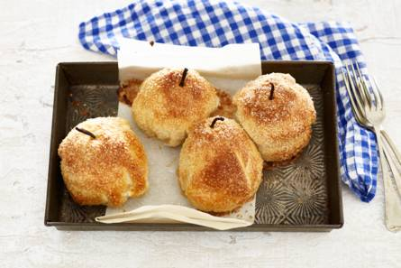

Ga uit je bol met bladerdeeg, appel en spijs! Dan de oven in en voilà je zelfgemaakte appelbollen.
Ingrediënten
1 vanillestokje
100 g amandelspijs (pakje 300 g)
1 ei
1 tl gemalen kardemom
4 red love appels (of elstarappels)
270 g bladerdeeg (rol, koelvers)
2 el suiker
benodigdheden
appelboor
ovenschaal
bakpapier
Bereidingswijze
Verwarm de oven voor op 180 °C. Snijd het vanillestokje met een scherp mes in de lengte aan één kant open. Schraap het merg eruit met de punt van het mes en voeg dit toe aan de amandelspijs. Klop het ei los en meng de helft ervan met de spijs en voeg de kardemom toe. Schil de appels en haal het klokhuis eruit met een appelboor. Vul de appels met het mengsel.
Snijd het bladerdeeg in 4 gelijke stukken die groot genoeg zijn om een appel mee te bedekken. Leg op elk stuk een appel. Vouw het deeg over de appel tot een mooie bol en leg met de vouwkant naar beneden op een met bakpapier beklede bakplaat.
Bestrijk de bollen met de rest van het ei en strooi er de suiker over. Knip het leeggeschraapte vanillestokje in gelijke stukken en steek die als een ‘steeltje’ boven in de appelbol. Bak de bollen in ca. 25 min. goudbruin. Let op: het vanillestokje is niet eetbaar!

Tip Kun je geen vanillestokjes vinden? Gebruik dan vanillesuiker of aroma voor de vulling. Bewaar de steeltjes van de appels om in plaats van de leeggeschraapte vanillestokjes vlak voor het bakken in de bol te steken. De steeltjes zijn niet eetbaar.